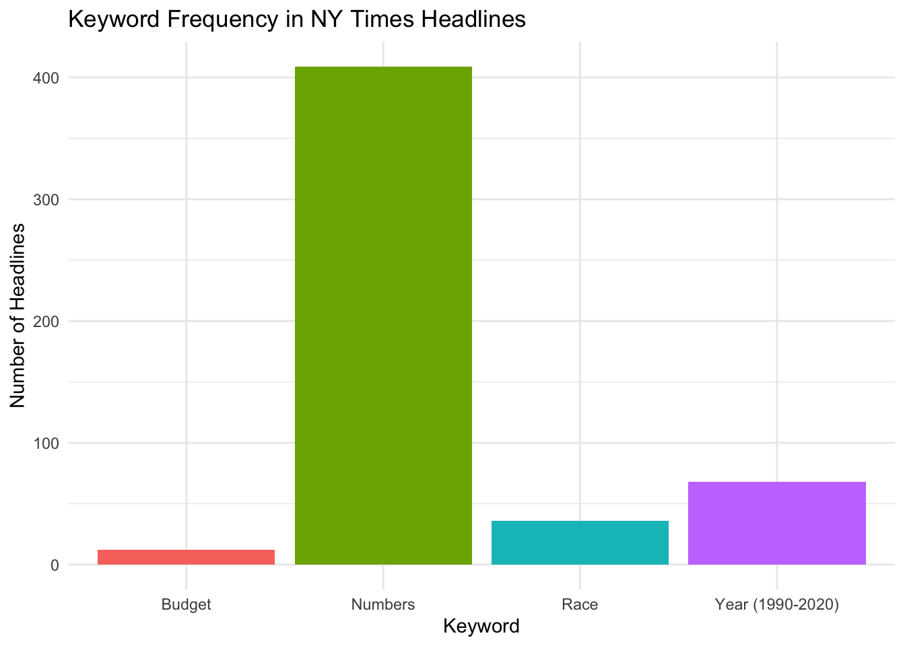
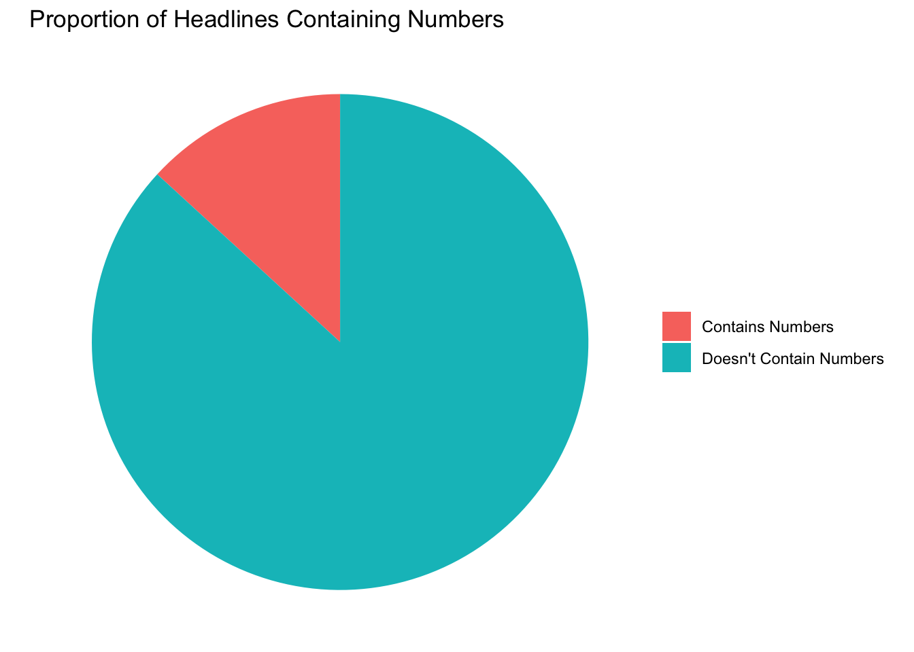
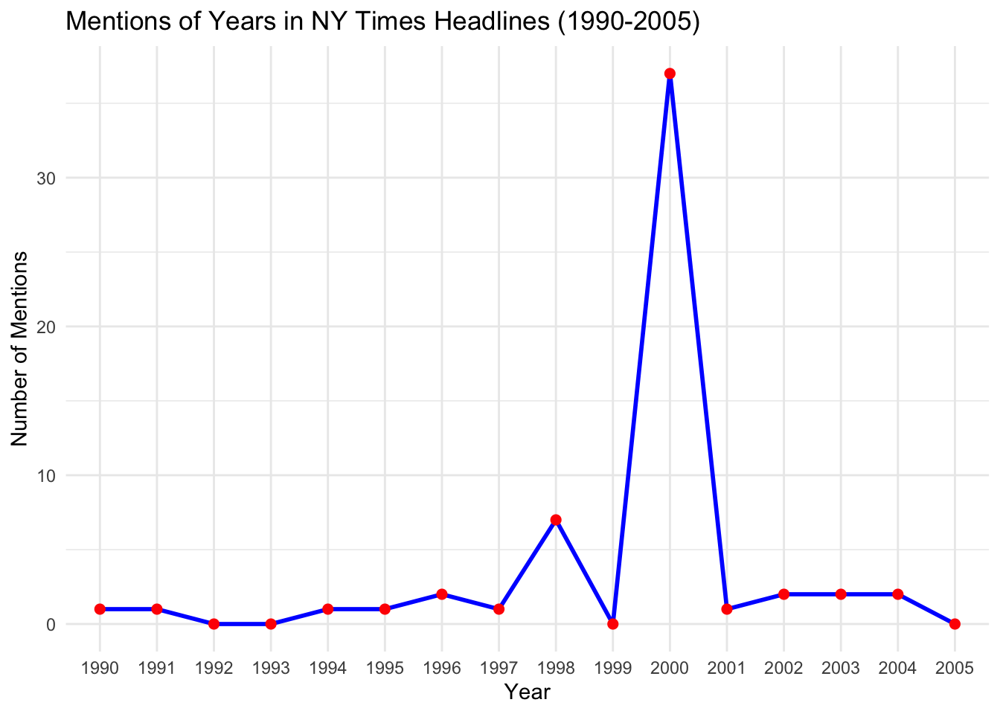

Step 1: Load the Dataset & Converting it to a Tibble for Easier Manipulation
# Load the packagelibrary(RTextTools)
Loading required package: SparseM
# Load the NYTimes datasetdata(NYTimes)# Load the tibble packagelibrary(tibble)# Convert the NYTimes dataset to a tibblenytimes_data <-as_tibble(NYTimes)# Check the structure of the datasetstr(nytimes_data)
tibble [3,104 × 5] (S3: tbl_df/tbl/data.frame)
$ Article_ID: int [1:3104] 41246 41257 41268 41279 41290 41302 41314 41333 41344 41355 ...
$ Date : Factor w/ 3099 levels "1-Apr-00","1-Apr-01",..: 42 1156 2268 2524 2626 2830 2934 140 236 341 ...
$ Title : Factor w/ 3076 levels "$58 BILLION DEAL TO UNITE 2 GIANTS OF U.S. BANKING",..: 1895 1090 1726 2797 476 2426 376 477 1361 2691 ...
$ Subject : Factor w/ 3036 levels "\"concierge\" medicine and its effect on the health care system",..: 938 604 445 192 169 2699 2268 2042 2081 1983 ...
$ Topic.Code: int [1:3104] 12 20 20 19 1 19 1 1 20 15 ...
Step 2: Exploring the Dataset
# View the first few rows of the datasethead(nytimes_data)
# A tibble: 6 × 5
Article_ID Date Title Subject Topic.Code
<int> <fct> <fct> <fct> <int>
1 41246 1-Jan-96 Nation's Smaller Jails Struggle To Cop… Jails … 12
2 41257 2-Jan-96 FEDERAL IMPASSE SADDLING STATES WITH I… Federa… 20
3 41268 3-Jan-96 Long, Costly Prelude Does Little To Al… Conten… 20
4 41279 4-Jan-96 Top Leader of the Bosnian Serbs Now Un… Bosnia… 19
5 41290 5-Jan-96 BATTLE OVER THE BUDGET: THE OVERVIEW; … Battle… 1
6 41302 7-Jan-96 South African Democracy Stumbles on Ol… politi… 19
# Check the structure of the datasetstr(nytimes_data)
tibble [3,104 × 5] (S3: tbl_df/tbl/data.frame)
$ Article_ID: int [1:3104] 41246 41257 41268 41279 41290 41302 41314 41333 41344 41355 ...
$ Date : Factor w/ 3099 levels "1-Apr-00","1-Apr-01",..: 42 1156 2268 2524 2626 2830 2934 140 236 341 ...
$ Title : Factor w/ 3076 levels "$58 BILLION DEAL TO UNITE 2 GIANTS OF U.S. BANKING",..: 1895 1090 1726 2797 476 2426 376 477 1361 2691 ...
$ Subject : Factor w/ 3036 levels "\"concierge\" medicine and its effect on the health care system",..: 938 604 445 192 169 2699 2268 2042 2081 1983 ...
$ Topic.Code: int [1:3104] 12 20 20 19 1 19 1 1 20 15 ...
# Get a summary of the datasetsummary(nytimes_data)
Article_ID Date Title
Min. : 5469 10-Feb-00: 2 CRISIS IN THE BALKANS: THE OVERVIEW; : 6
1st Qu.:21845 18-Nov-02: 2 TESTING OF A PRESIDENT: THE OVERVIEW;: 5
Median :29658 24-Jan-01: 2 INTERNATIONAL BUSINESS; : 4
Mean :28855 29-Sep-99: 2 STANDOFF WITH IRAQ: THE OVERVIEW; : 3
3rd Qu.:37446 3-Jan-97 : 2 TERROR IN LITTLETON: THE OVERVIEW; : 3
Max. :45722 1-Apr-00 : 1 BASEBALL PLAYOFFS : 2
(Other) :3093 (Other) :3081
Subject Topic.Code
baseball : 10 Min. : 1.00
priest abuse scandal: 7 1st Qu.:12.00
Enron scandal : 5 Median :17.00
olympics : 5 Mean :16.59
tennis : 4 3rd Qu.:20.00
2000 campaign : 3 Max. :99.00
(Other) :3070
Step 3: Analysis Using String Functions
library(stringr)# 1. Count the number of headlines that contain the word "politics"politics_count <-sum(str_detect(nytimes_data$Title, "politics"), na.rm =TRUE)cat("Number of headlines containing 'politics':", politics_count)
Number of headlines containing 'politics': 0
# 2. Remove punctuation from headlinesnytimes_data$clean_headlines <-str_replace_all(nytimes_data$Title, "[[:punct:]]", "")head(nytimes_data$clean_headlines)
[1] "Nations Smaller Jails Struggle To Cope With Surge in Inmates"
[2] "FEDERAL IMPASSE SADDLING STATES WITH INDECISION"
[3] "Long Costly Prelude Does Little To Alter Plot of Presidential Race"
[4] "Top Leader of the Bosnian Serbs Now Under Attack From Within"
[5] "BATTLE OVER THE BUDGET THE OVERVIEW LEADERS IN HOUSE DROP GOP PLAN ON US WORKERS"
[6] "South African Democracy Stumbles on Old Rivalry"
# 3. Extract the first word of each headlinenytimes_data$first_word <-str_extract(nytimes_data$Title, "\\b\\w+\\b")head(nytimes_data$first_word)
library(stringr)# 1. Count the number of headlines that contain numbersnytimes_data$has_numbers <-str_detect(nytimes_data$Title, "\\d+")num_with_numbers <-sum(nytimes_data$has_numbers, na.rm =TRUE)cat("Number of headlines containing numbers:", num_with_numbers, "\n")
Number of headlines containing numbers: 409
# 2. Check for broader keywords like "Race" or "Budget"nytimes_data$contains_race <-str_detect(nytimes_data$Title, "Race")nytimes_data$contains_budget <-str_detect(nytimes_data$Title, "Budget")# Summarize countsnum_with_race <-sum(nytimes_data$contains_race, na.rm =TRUE)num_with_budget <-sum(nytimes_data$contains_budget, na.rm =TRUE)cat("Number of headlines containing 'Race':", num_with_race, "\n")
Number of headlines containing 'Race': 36
cat("Number of headlines containing 'Budget':", num_with_budget, "\n")
Number of headlines containing 'Budget': 12
# 3. Search for any mention of years from 1990 to 2020nytimes_data$contains_year <-str_detect(nytimes_data$Title, "19[0-9]{2}|20[0-2][0-9]")num_with_year <-sum(nytimes_data$contains_year, na.rm =TRUE)cat("Number of headlines containing years from 1990-2020:", num_with_year, "\n")
Number of headlines containing years from 1990-2020: 68
Step 5: Visualization
(a) Bar Plot of Word Frequency:
library(ggplot2)# Create a data frame for the keyword countskeyword_data <-data.frame(Keyword =c("Numbers", "Race", "Budget", "Year (1990-2020)"),Count =c(num_with_numbers, num_with_race, num_with_budget, num_with_year))# Create a bar plotggplot(keyword_data, aes(x = Keyword, y = Count, fill = Keyword)) +geom_bar(stat ="identity") +labs(title ="Keyword Frequency in NY Times Headlines",x ="Keyword", y ="Number of Headlines") +theme_minimal() +theme(legend.position ="none")

Plot Description: Plot (a) highlights the prominence of numbers and certain keywords in the headlines.
(b) Pie Chart of Headlines Containing Numbers:
# Create a data frame for the pie chartnumber_data <-data.frame(Category =c("Contains Numbers", "Doesn't Contain Numbers"),Count =c(num_with_numbers, nrow(nytimes_data) - num_with_numbers))# Create the pie chartggplot(number_data, aes(x ="", y = Count, fill = Category)) +geom_bar(stat ="identity", width =1) +coord_polar("y") +labs(title ="Proportion of Headlines Containing Numbers") +theme_void() +theme(legend.title =element_blank())

Plot Description: Plot (b) highlights the prominence of numbers and certain keywords in the headlines.
(c) Line Plot of Year Mentions (1990-2005)
# Extract the mentioned years from headlines (1990-2005nytimes_data$mentioned_year <-str_extract(nytimes_data$Title, "19[0-9]{2}|20[0-2][0-9]")# Convert the mentioned_year column to a factor for plottingnytimes_data$mentioned_year <-factor(nytimes_data$mentioned_year, levels =as.character(1990:2005))# Filter out any missing or irrelevant years outside the range (1990-2005)filtered_year_data <- nytimes_data[!is.na(nytimes_data$mentioned_year), ]# Count the number of mentions of each yearyear_count <-table(filtered_year_data$mentioned_year)# Convert the table to a data frame for plottingyear_count_df <-as.data.frame(year_count)colnames(year_count_df) <-c("Year", "Count")# Create a line plot showing year mentions over time (1990-2005)ggplot(year_count_df, aes(x = Year, y = Count)) +geom_line(group =1, color ="blue", size =1) +geom_point(color ="red", size =2) +labs(title ="Mentions of Years in NY Times Headlines (1990-2005)",x ="Year", y ="Number of Mentions") +theme_minimal()
Warning: Using `size` aesthetic for lines was deprecated in ggplot2 3.4.0.
ℹ Please use `linewidth` instead.

Plot Description: Plot (c) provides a historical view of how frequently different years were mentioned in headlines.